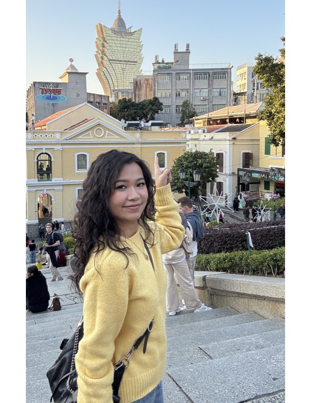
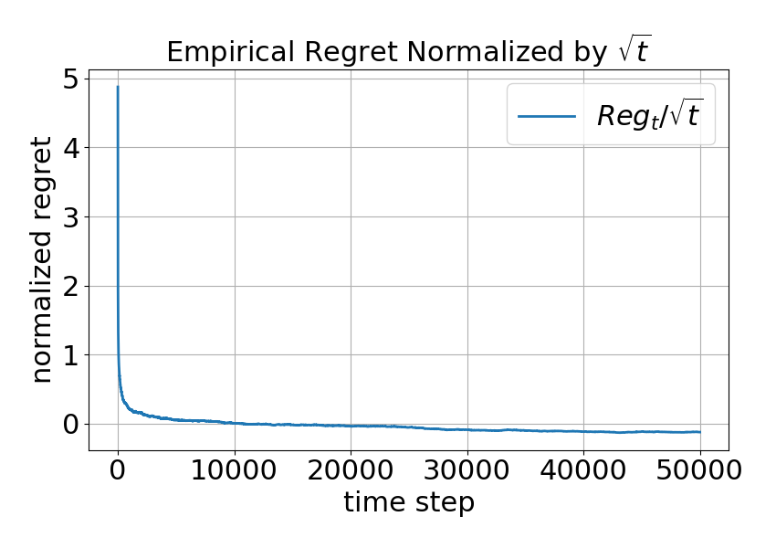
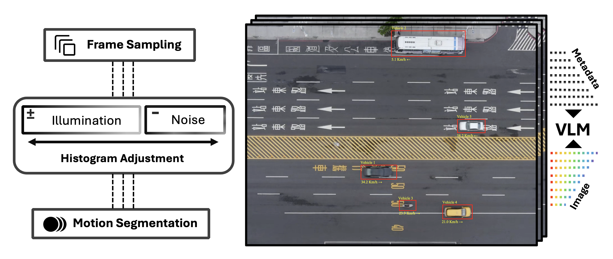
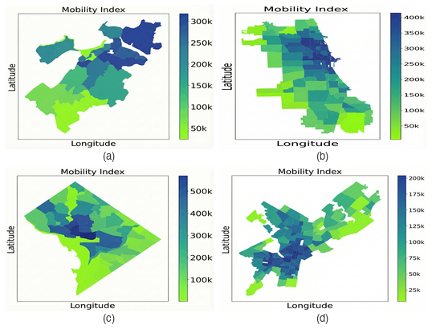

Hi there! I'm a Ph.D. student in Systems Engineering at Cornell University, where I am fortunate to be advised by Andreas A. Malikopoulos in the Information and Decision Science (IDS) Lab. My work spans control theory, leanring, game theory, and AI integration for autonomous systems, with hands-on experimental validation in the IDS3C Scaled Smart City. My research focuses on making autonomous systems safe and adaptive under uncertainty, bridging learning-based methods with formal control guarantees.
Research Interests: Adaptive Control under Uncertainty, Multi-Agent Coordination, Vision-Language Models for Autonomy, and Zero-Sum Game Theory.


CDC 2026
IEEE OJCS
IEEE T-ITS 2025Organizing the Data-Driven Learning and Control seminar series — managing speaker invitations, logistics, recordings, and outreach.
I'm always open to collaborations and conversations about autonomous systems,
game theory, and multi-agent learning.